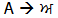
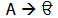

ਕੜੀਆਂਲੇਖNone
|
ਯੂਨੀਕੋਡ ਦੀ ਸ਼ੁਰੂਆਤ ਕਰਨੀਇਸ ਦਸਤਾਵੇਜ਼ ਦਾ PDF ਰੁਪਾਂਤਰ ਵੀ ਉਪਲਬਧ ਹੈ। ਇਸ ਗਾਈਡ ਵਿਚ ਯੂਨੀਕੋਡ ਦੇ ਸਿਧਾਂਤ ਬਾਰੇ ਜਾਣਕਾਰੀ ਦਿੱਤੀ ਗਈ ਹੈ ਅਤੇ ਦੱਸਿਆ ਗਿਆ ਹੈ ਕਿ ਇਸਨੂੰ ਕਿਵੇਂ ਕੰਪਿਊਟਰ ਤੇ ਗੁਰਮੁਖੀ ਵਿਚ ਪੰਜਾਬੀ ਲਿਖਣ ਲਈ ਵਰਤਿਆ ਜਾ ਸਕਦਾ ਹੈ। ਇਹ ਉਹਨਾਂ ਲੋਕਾਂ ਲਈ ਤਿਆਰ ਕੀਤੀ ਗਈ ਹੈ ਜਿਹਨਾਂ ਨੂੰ ਗੁਰਮੁਖੀ ਦੀ ਜਾਣਕਾਰੀ ਹੈ ਅਤੇ ਜਿਹਨਾਂ ਨੇ ਪਹਿਲਾਂ ਕੰਪਿਊਟਰ ਤੇ ਗੁਰਮੁਖੀ ਵਿਚ ਕੰਮ ਕੀਤਾ ਹੈ। ਸ਼ੁਰੂਆਤ ਕਰਨੀਸ਼ੁਰੂਆਤ ਕਰਨ ਲਈ ਤੁਹਾਨੂੰ ਇਹ ਪਤਾ ਕਰਨ ਦੀ ਲੋੜ ਹੈ ਕਿ ਤੁਹਾਡਾ ਕੰਪਿਊਟਰ ਯੂਨੀਕੋਡ ਦੇ ਅਨੁਕੂਲ ਹੈ ਅਤੇ ਗੁਰਮੁਖੀ ਚਲਾਉਣ ਲਈ ਉਚਿਤ ਸੌਫ਼ਟਵੇਅਰ ਇੰਸਟਾਲ ਕਰਨਾ ਪਵੇਗਾ। ਜੇ ਤੁਹਾਡਾ ਓਪਰੇਟਿੰਗ ਸਿਸਟਮ ਯੂਨੀਕੋਡ ਦੇ ਅਨੁਕੂਲ ਹੈ ਤਾਂ ਇਹ ਇਕ ਛੋਟਾ ਜਿਹਾ ਕੰਮ ਹੈ। ਵਿੰਡੋਜ਼ ਐਕਸਪੀ ਅਤੇ ਇਸ ਤੋਂ ਬਾਅਦ ਦੇ ਵਿੰਡੋਜ਼ ਦੇ ਰੁਪਾਂਤਰ ਪੂਰੀ ਤਰ੍ਹਾਂ ਨਾਲ ਯੂਨੀਕੋਡ ਗੁਰਮੁਖੀ ਦੇ ਅਨੁਕੂਲ ਹਨ। ਵਿੰਡੋਜ਼ ਦੇ ਪੁਰਾਣੇ ਰੁਪਾਂਤਰ (95, 98, Me) ਗੁਰਮੁਖੀ ਦੇ ਅਨੁਕੂਲ ਨਹੀਂ ਹਨ। ਜੇ ਤੁਹਾਡੇ ਕੋਲ ਵਿੰਡੋਜ਼ ਦਾ ਪੁਰਾਣਾ ਰੁਪਾਂਤਰ ਹੈ ਤਾਂ ਤੁਸੀਂ ਇੰਟਰਨੈਟ ਐਕਸਪਲੋਰਰ 6.0 (Internet Explorer 6.0) ਡਾਊਨਲੋਡ ਕਰ ਸਕਦੇ ਹੋ ਜਿਸ ਨਾਲ ਤੁਸੀਂ ਯੂਨੀਕੋਡ ਗੁਰਮੁਖੀ ਵਿਚ ਲਿਖੇ ਵੈਬ ਪੇਜ ਦੇਖ ਸਕੋਗੇ। ਵਿੰਡੋਜ਼ ਦੇ ਪੁਰਾਣੇ ਰੁਪਾਂਤਰਾਂ ਤੇ ਤੁਸੀਂ ਯੂਨੀਕੋਡ ਗੁਰਮੁਖੀ ਵਿਚ ਟਾਈਪ ਨਹੀਂ ਕਰ ਸਕੋਗੇ। ਤੁਹਾਡੇ ਓਪਰੇਟਿੰਗ ਸਿਸਟਮ ਤੇ ਨਿਰਭਰ ਕਰਦੇ ਹੋਏ ਤੁਹਾਡੇ ਕੰਪਿਊਟਰ ਤੇ ਯੂਨੀਕੋਡ ਗੁਰਮੁਖੀ ਸ਼ੁਰੂ ਕਰਨ ਬਾਰੇ ਜਾਣਕਾਰੀ ਉਪਲਬਧ ਹੈ। ਆਪਣੇ ਕੰਪਿਊਟਰ ਤੇ ਗੁਰਮੁਖੀ ਸ਼ੁਰੂ ਕਰਨ ਤੋਂ ਬਾਅਦ, ਜੇ ਤੁਹਾਡੇ ਕੰਪਿਊਟਰ ਵਿਚ ਯੂਨੀਕੋਡ ਗੁਰਮੁਖੀ ਦੇ ਫ਼ੌਂਟ ਨਹੀਂ ਹਨ ਤਾਂ ਤੁਹਾਨੂੰ ਇਹ ਇੰਸਟਾਲ ਕਰਨੇ ਚਾਹੀਦੇ ਹਨ। ਕਈ ਮੁਫ਼ਤ ਫ਼ੌਂਟ ਉਪਲਬਧ ਹਨ। ਅਸੀਂ ਸੁਝਾਉ ਦਿੰਦੇ ਹਾਂ ਕਿ ਤੁਸੀਂ ਸਾਬ (Saab) ਅਤੇ ਅਨਮੋਲਯੂਨੀ (AnmolUni), ਦੋਵੇਂ ਇੰਸਟਾਲ ਕਰ ਲਵੋ। ਅੰਤ ਵਿਚ, ਤੁਹਾਨੂੰ ਆਪਣੇ ਕੀਬੋਰਡ ਦੀ ਵਿਓਂਤ ਨੂੰ ਸਮਝਣਾ ਪਵੇਗਾ। ਜੇ ਤੁਸੀਂ ਇਸ ਤੋਂ ਖ਼ੁਸ਼ ਨਹੀਂ ਹੋ ਤਾਂ ਤੁਸੀਂ ਕੋਈ ਹੋਰ ਕੀਬੋਰਡ ਵਿਓਂਤ ਡਾਊਨਲੋਡ ਕਰ ਸਕਦੇ ਹੋ ਜਾਂ ਆਪਣੀ ਕੀਬੋਰਡ ਵਿਓਂਤ ਬਣਾਉਣ ਲਈ ਮਾਈਕ੍ਰੋਸੌਫ਼ਟ ਕੀਬੋਰਡ ਲੇਆਊਟ ਕ੍ਰਿਏਟਰ (Microsoft Keyboard Layout Creator) ਡਾਊਨਲੋਡ ਕਰ ਸਕਦੇ ਹੋ। ਇਕੋ ਕੀਬੋਰਡ ਵਿਓਂਤ ਸਾਰੇ ਯੂਨੀਕੋਡ ਗੁਰਮੁਖੀ ਫ਼ੌਂਟਾਂ ਲਈ ਵਰਤੀ ਜਾ ਸਕਦੀ ਹੈ। ਜੇ ਤੁਸੀਂ ਵਿਓਂਤ ਬਦਲਦੇ ਹੋ ਤਾਂ ਇਸ ਨਾਲ ਤੁਹਾਡੇ ਦੁਆਰਾ ਵਰਤੇ ਜਾ ਰਹੇ ਫ਼ੋਂਟਾਂ ਤੇ ਕੋਈ ਪ੍ਰਭਾਵ ਨਹੀਂ ਪਵੇਗਾ। ਯੂਨੀਕੋਡਯੂਨੀਕੋਡ ਨੂੰ ਇਕ ਅਜਿਹੇ ਅੱਖਰ ਸਮੂਹ ਦੇ ਰੂਪ ਵਿਚ ਤਿਆਰ ਕੀਤਾ ਗਿਆ ਹੈ ਜਿਸ ਨਾਲ ਦੁਨੀਆਂ ਦੀਆਂ ਲਗਭਗ ਸਾਰੀਆਂ ਲਿਖੀਆਂ ਜਾਣ ਵਾਲੀਆਂ ਲਿਪੀਆਂ ਨੂੰ ਕਿਸੇ ਕੰਪਿਊਟਰ ਤੇ ਵਰਤਿਆ ਜਾ ਸਕਦਾ ਹੈ। ਇਹ ਇਕ ਮਹੱਤਵਪੂਰਨ ਕਦਮ ਹੈ ਅਤੇ ਇਸ ਨਾਲ ਅੰਗਰੇਜ਼ੀ ਤੋਂ ਇਲਾਵਾ ਦੂਜੀਆਂ ਭਾਸ਼ਾਵਾਂ ਨੂੰ ਵਿਆਪਕ ਰੂਪ ਵਿਚ ਕੰਪਿਊਟਰ ਸਿਸਟਮ ਤੇ ਵਰਤਿਆ ਜਾ ਸਕਦਾ ਹੈ। “ਯੂਨੀਕੋਡ ਹਰ ਇਕ ਅੱਖਰ ਲਈ ਇਕ ਵੱਖ ਅੰਕ ਮੁਹੱਈਆ ਕਰਦਾ ਹੈ, ਭਾਵੇਂ ਕੋਈ ਵੀ ਸਿਸਟਮ ਹੋਵੇ, ਕੋਈ ਵੀ ਪ੍ਰੋਗ੍ਰਾਮ ਹੋਵੇ, ਕੋਈ ਵੀ ਭਾਸ਼ਾ ਹੋਵੇ” ਯੂਨੀਕੋਡ, ਫ਼ੌਂਟਾਂ ਤੋਂ ਕਿਵੇਂ ਵੱਖ ਹੈਪਹਿਲਾਂ, ਗੁਰਮੁਖੀ ਨੂੰ ਬਹੁਤ ਸਾਰੇ ਵੱਖ-ਵੱਖ ਨਿਜੀ ਫ਼ੌਂਟਾਂ ਦੇ ਮਾਧਿਅਮ ਨਾਲ ਦਰਸਾਇਆ ਜਾਂਦਾ ਰਿਹਾ ਹੈ - ਹਰ ਇਕ ਫ਼ੌਂਟ ਦਾ ਆਪਣਾ-ਆਪਣਾ ਕੋਡਿੰਗ ਤਰੀਕਾ ਅਤੇ ਕੀਬੋਰਡ ਵਿਓਂਤ ਸੀ। ਉਹ ਅੰਗਰੇਜ਼ੀ ਦੇ ਅੱਖਰਾਂ ਦੀ ਬਣਾਵਟ ਬਦਲ ਕੇ ਕੰਮ ਕਰਦੇ ਹਨ ਜਿਸ ਨਾਲ ਗੁਰਮੁਖੀ ਦੇ ਅੱਖਰ ਬਣਦੇ ਹਨ। ਉਦਾਹਰਨ ਲਈ ਅਨਮੋਲ ਲਿਪੀ ਵਿਚ ਅੰਗਰੇਜ਼ੀ ਦੇ ਵੱਡੇ ‘A’ ਨਾਲ ‘ਅ’ ਲਿਖਿਆ ਜਾਂਦਾ ਹੈ।  ਕਿਸੇ ਦੂਜੇ ਫ਼ੌਂਟ ਨੂੰ ਵਰਤਨ ਨਾਲ ਗੁਰਮੁਖੀ ਮਜ਼ਮੂਨ ਖ਼ਰਾਬ ਹੋ ਜਾਂਦਾ ਹੈ ਅਤੇ ਇਹ ਪੜ੍ਹਣ ਦੇ ਕਾਬਲ ਨਹੀਂ ਰਹਿੰਦਾ ਹੈ। ਉਦਾਹਰਨ ਲਈ DrChatrikWeb ਵਿਚ ਇਹ ਅੱਖਰ ‘ੳ’ ਦਿਖਾਈ ਦਿੰਦਾ ਹੈ।  ਯੂਨੀਕੋਡ ਨਾਲ ਇਹ ਸਮੱਸਿਆ ਠੀਕ ਹੋ ਗਈ ਹੈ। ਇਸ ਵਿਚ ਗੁਰਮੁਖੀ ਨੂੰ ਇਸਦੇ ਆਪਣੇ ਅੱਖਰਾਂ ਨਾਲ ਦਰਸਾਇਆ ਜਾਂਦਾ ਹੈ ਅਤੇ ਅੰਗਰੇਜ਼ੀ ਦੇ ਅੱਖਰਾਂ ਨੂੰ ਨਹੀਂ ਵਰਤਿਆ ਜਾਂਦਾ ਹੈ। ਇਸਦਾ ਸਾਰੇ ਕੰਪਿਊਟਰਾਂ ਤੇ ਮਿਆਰੀਕਰਨ ਕੀਤਾ ਗਿਆ ਹੈ, ਇਸ ਲਈ ਤੁਸੀਂ ਜਿਹੜਾ ਮਰਜ਼ੀ ਫ਼ੌਂਟ ਵਰਤੋ, ਮਜ਼ਮੂਨ ਉਹੀ ਰਹੇਗਾ! ਯੂਨੀਕੋਡ ਵਿਚ ਅੱਖਰਾਂ ਦੇ ਕੋਡ ਅਤੇ ਇਹਨਾਂ ਨੂੰ ਟਾਈਪ ਕਰਨ ਦਾ ਤਰੀਕਾ ਆਪਸ ਵਿਚ ਜੁੜੇ ਹੋਏ ਨਹੀਂ ਹਨ। ਇਸਦਾ ਅਰਥ ਹੈ ਕਿ ਤੁਸੀਂ ਆਪਣੀ ਪਸੰਦ ਦੀ ਕੋਈ ਵੀ ਕੀਬੋਰਡ ਵਿਓਂਤ ਵਰਤ ਸਕਦੇ ਹੋ ਅਤੇ ਅੱਖਰ ਹਮੇਸ਼ਾ ਉਹੀ ਰਹਿਣਗੇ। ਤੁਹਾਨੂੰ ਕੀ ਪਤਾ ਹੋਣਾ ਚਾਹੀਦਾ ਹੈਯੂਨੀਕੋਡ ਗੁਰਮੁਖੀ ਨੂੰ ਵਰਤਨ ਨਾਲ ਸੰਬੰਧਤ ਕੁਝ ਖ਼ਾਸ ਗੱਲਾਂ ਹਨ ਜਿਹਨਾਂ ਦੀ ਤੁਹਾਨੂੰ ਜਾਣਕਾਰੀ ਹੋਣੀ ਚਾਹੀਦੀ ਹੈ। ਗੁਰਮੁਖੀ ਵਿਚ ਅਜ਼ਾਦ ਸ੍ਵਰ ਦਾ ਸਿਧਾਂਤ ਨਹੀਂ ਹੈ। ਦੂਜੀਆਂ ਭਾਰਤੀ ਲਿਪੀਆਂ ਦੀ ਤਰ੍ਹਾਂ ਨਾ ਹੋ ਕੇ, ਗੁਰਮੁਖੀ ਵਿਚ ਉੜੇ, ਐੜੇ ਅਤੇ ਈੜੀ ਦੇ ਨਾਲ ਮਾਤਰਾ ਜੋੜ ਕੇ ਅਜ਼ਾਦ ਸ੍ਵਰ ਬਣਾਏ ਜਾਂਦੇ ਹਨ। ਦੂਜੀਆਂ ਭਾਰਤੀ ਲਿਪੀਆਂ, ਜਿਵੇਂ ਕਿ ਦੇਵਨਗਰੀ, ਦੇ ਨਾਲ ਮਿਲਾਉਣ ਲਈ ਯੂਨੀਕੋਡ ਇਹਨਾਂ ਅਜ਼ਾਦ ਸ੍ਵਰਾਂ ਨੂੰ ਵੱਖ ਕੋਡ ਤੇ ਰੱਖਦਾ ਹੈ। ਇਸ ਲਈ ਜਦੋਂ ਤੁਸੀਂ ਈੜੀ ਅਤੇ ਬਿਹਾਰੀ ਟਾਈਪ ਕਰਨਾ ਚਾਹੋ ਤਾਂ ਤੁਹਾਨੂੰ ਪਹਿਲਾਂ ਤੋਂ ਤਿਆਰ ਕੀਤਾ ਗਿਆ ਇੜੀ-ਬਿਹਾਰੀ ਦਾ ਅੱਖਰ ਹੀ ਵਰਤਨਾ ਪਵੇਗਾ। ਸੰਯੁਕਤ ਅੱਖਰ, ਜਿਵੇਂ ਕਿ ਪੈਰੀਂ ਹਾਹਾ ਅਤੇ ਪੈਰੀਂ ਰਾਰਾ, ਦੇਵਨਗਰੀ ਵਰਗੇ ਹਲੰਤ ਦੀ ਵਰਤੋਂ ਨਾਲ ਬਣਾਏ ਜਾਂਦੇ ਹਨ। ਇਸ ਲਈ, ਜੇ ਤੁਸੀਂ ‘ਪ੍ਰ’ ਟਾਈਪ ਕਰਨਾ ਚਾਹੋ ਤਾਂ ਤੁਸੀਂ ਪੱਪਾ, ਹਲੰਤ (੍) ਅਤੇ ਫੇਰ ਰਾਰਾ ਟਾਈਪ ਕਰੋਗੇ। ਉੱਪਰ ਦੱਸੇ ਗਏ ਦੋ ਮੁੱਦਿਆਂ ਨੂੰ ਵੱਖ-ਵੱਖ ਕੀਬੋਰਡ ਵਿਓਂਤਾਂ ਦੀ ਮਦਦ ਨਾਲ ਹੱਲ ਕੀਤਾ ਜਾ ਸਕਦਾ ਹੈ। ਉਦਾਹਰਨ ਲਈ ਤੁਸੀਂ ਇਕ ਅਜਿਹੀ ਕੀਬੋਰਡ ਵਿਓਂਤ ਤਿਆਰ ਕਰ ਸਕਦੇ ਹੋ ਜੋ ਈੜੀ ਅਤੇ ਬਿਹਾਰੀ ਦੇ ਵੱਖ-ਵੱਖ ਅੱਖਰਾਂ ਨੂੰ ਪਹਿਲਾਂ ਤੋਂ ਬਣਾਏ ਗਏ ਈੜੀ-ਬਿਹਾਰੀ ਅੱਖਰ ਵਿਚ ਬਦਲ ਦਵੇ। ਤੁਸੀਂ ਕੀਬੋਰਡ ਦਾ ਇਕ ਅਜਿਹਾ ਬਟਨ ਵੀ ਰੱਖ ਸਕਦੇ ਹੋ ਜੋ ਹਲੰਤ ਅਤੇ ਰਾਰਾ/ਹਾਹਾ ਦੋਵੇਂ ਟਾਈਪ ਕਰੇ, ਤਾਂ ਜੋ ਜਦੋਂ ਇਸਨੂੰ ਦਬਾਇਆ ਜਾਵੇ ਤਾਂ ਇਹ ਪੈਰੀਂ ਅੱਖਰ ਦਿਖਾਏ। ਹੋ ਸਕਦਾ ਹੈ ਕੁਝ ਕੀਬੋਰਡਾਂ ਵਿਚ ਇਹ ਵਿਸ਼ੇਸਤਾਵਾਂ ਹੋਣ ਅਤੇ ਤੁਸੀਂ ਕੋਈ ਵੀ ਕੀਬੋਰਡ ਵਰਤ ਸਕਦੇ ਹੋ ਜੋ ਤੁਹਾਨੂੰ ਠੀਕ ਲੱਗੇ। ਯੂਨੀਕੋਡ ਵਿਚ ਅੱਖਰ ਅਵਾਜ਼ ਦੇ ਕ੍ਰਮ ਵਿਚ ਟਾਈਪ ਕੀਤੇ ਜਾਂਦੇ ਹਨ - ਮਤਲਬ ਕਿ ਜਿਸ ਕ੍ਰਮ ਵਿਚ ਇਹ ਬੋਲੇ ਜਾਂਦੇ ਹਨ ਨਾ ਕਿ ਜਿਸ ਕ੍ਰਮ ਵਿਚ ਲਿਖੇ ਜਾਂਦੇ ਹਨ। ਇਸ ਲਈ ਜੇ ਤੁਸੀਂ ਕਿਸੇ ਅੱਖਰ ਦੇ ਨਾਲ ਸਿਹਾਰੀ ਟਾਈਪ ਕਰਨਾ ਚਾਹੋ, ਤਾਂ ਤੁਹਾਨੂੰ ਸਿਹਾਰੀ ਉਸ ਅੱਖਰ ਤੋਂ ਬਾਅਦ ਟਾਈਪ ਕਰਨੀ ਚਾਹੀਦੀ ਹੈ। ਕੰਪਿਊਟਰ ਇਸਨੂੰ ਖੱਬੇ ਪਾਸ ਕਰ ਦਵੇਗਾ। ਉਦਾਹਰਨ ਲਈ, ‘ਵਿਚ’ ਟਾਈਪ ਕਰਨ ਲਈ ਤੁਸੀਂ ਵੱਵਾ, ਸਿਹਾਰੀ ਅਤੇ ਫੇਰ ਚੱਚਾ ਟਾਈਪ ਕਰੋਗੇ। ਯੂਨੀਕੋਡ ਗੁਰਮੁਖੀ ਦੇ ਮੂਲ ਨਿਯਮਾਂ ਨੂੰ ਜ਼ੋਰ ਦੇ ਕੇ ਲਾਗੂ ਕਰਦਾ ਹੈ। ਇਸ ਲਈ ਤੁਸੀਂ ਅਜਿਹੇ ਅੱਖਰ ਨਹੀਂ ਲਿਖ ਸਕਦੇ ਹੋ ਜੋ ਆਧੁਨਿਕ ਗੁਰਮੁਖੀ ਦੇ ਅਨੁਸਾਰ ਸਹੀ ਨਹੀਂ ਹਨ। ਉਦਾਹਰਨ ਲਈ, ਤੁਸੀਂ ਕਿਸੇ ਅੱਖਰ ਦੇ ਨਾਲ ਇਕ ਤੋਂ ਵੱਧ ਮਾਤਰਾ ਨਹੀਂ ਲਗਾ ਸਕਦੇ ਹੋ। ਜੇ ਤੁਸੀਂ ਇਸ ਤਰ੍ਹਾਂ ਕਰਨ ਦੀ ਕੋਸ਼ਿਸ਼ ਕਰਦੇ ਹੋ ਤਾਂ ਦੂਜੀ ਮਾਤਰਾ ਦੇ ਨਾਲ ਇਕ ਬਿੰਦੀਆਂ ਵਾਲਾ ਗੋਲਾ ਦਿਖਾਈ ਦਵੇਗਾ ਜੋ ਇਸਨੂੰ ਅੱਖਰ ਦੇ ਨਾਲ ਜੁੜਣ ਨਹੀਂ ਦਿੰਦਾ ਹੈ। |
ਕਾਪੀਰਾਈਟ © ੨੦੦੪-੨੦੦੫ ਸੁਖਜਿੰਦਰ ਸਿੱਧੂ। ਸਾਰੇ ਹੱਕ ਰਾਖਵੇਂ ਹਨ।